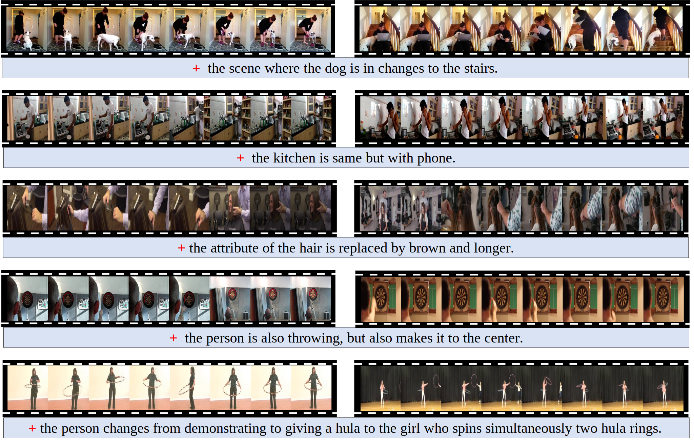

## Dataset
<div style="background-color: white;padding: 50px;">
    <div style="text-align: justify; margin-left: auto; margin-right: auto;">
        You can download the FineCVR-1M dataset from the following links:
        <br>&nbsp;
        <div class="button-container" style="display:flex;justify-content: center; align-items:center;">
        <button class="button" onclick="window.open('https://drive.google.com/drive/folders/1m6zM0udCj8LThWsiMAtsQBFEWAmMucTI?usp=drive_link')">
            <i class="fa fa-cloud-download"></i> CLIP Embeddings
        </button>
        <button class="button" onclick="window.open('https://drive.google.com/file/d/1-2JVLN8i06IB30ub8v-iqo3jI9u5V_2Q/view?usp=drive_link')">
            <i class="fa fa-cloud-download"></i> BLIP Embeddings
        </button>
        <button class="button" onclick="window.open('https://drive.google.com/drive/folders/1SneQu9pUhvWmehGxn_Y8YB0JGaa-XfAv?usp=drive_link')">
            <i class="fa fa-cloud-download"></i> Annotations
        </button>
        <button class="button" onclick="window.open('https://dcn338zwmn1v.feishu.cn/drive/folder/SyTvfxqral7x6HdR0fgcjZKbnJe')">
            <i class="fa fa-cloud-download"></i> Frames
        </button>
        </div>
    </div>
    
    <br>
    <div style="display:flex;justify-content: center; align-items:center;">
        Example tuples in FineCVR-1M dataset. 
    </div>
    
    
    
    
    <div style="text-align: justify; margin-left: auto; margin-right: auto;">
        The videos on the left represent reference videos, 
        while those on the right represent target videos. The modification texts at the bottom highlight the differences between the two videos.
    </div>
</div>
